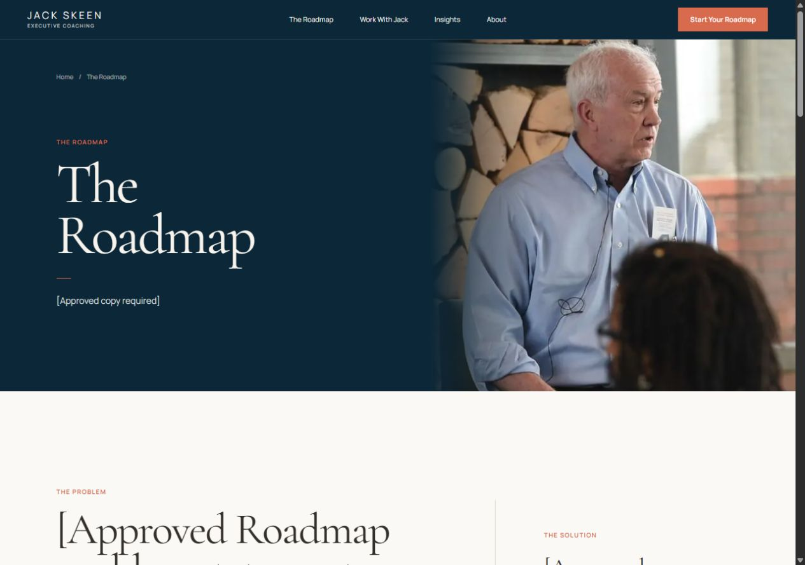
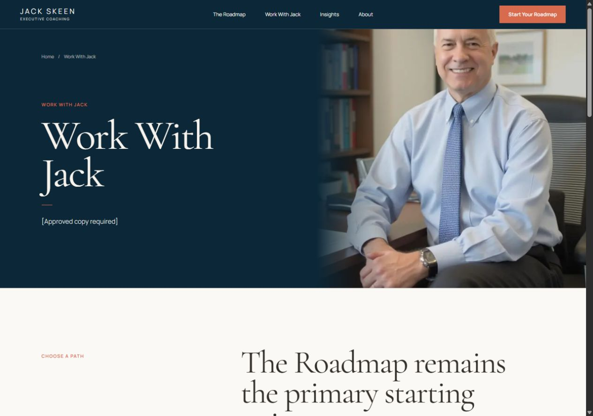
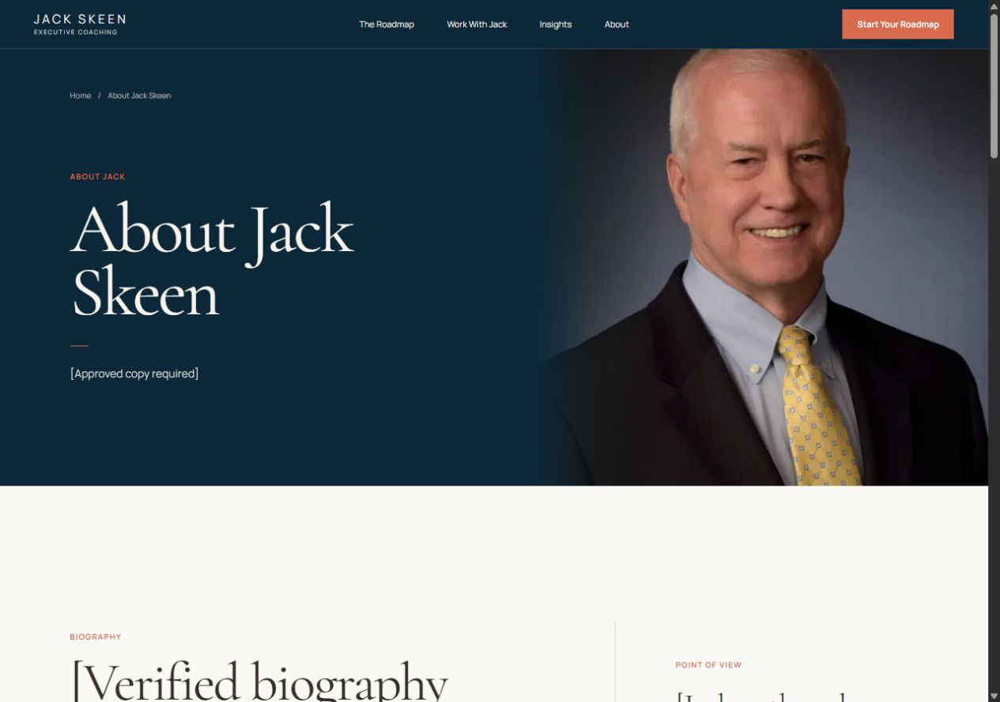
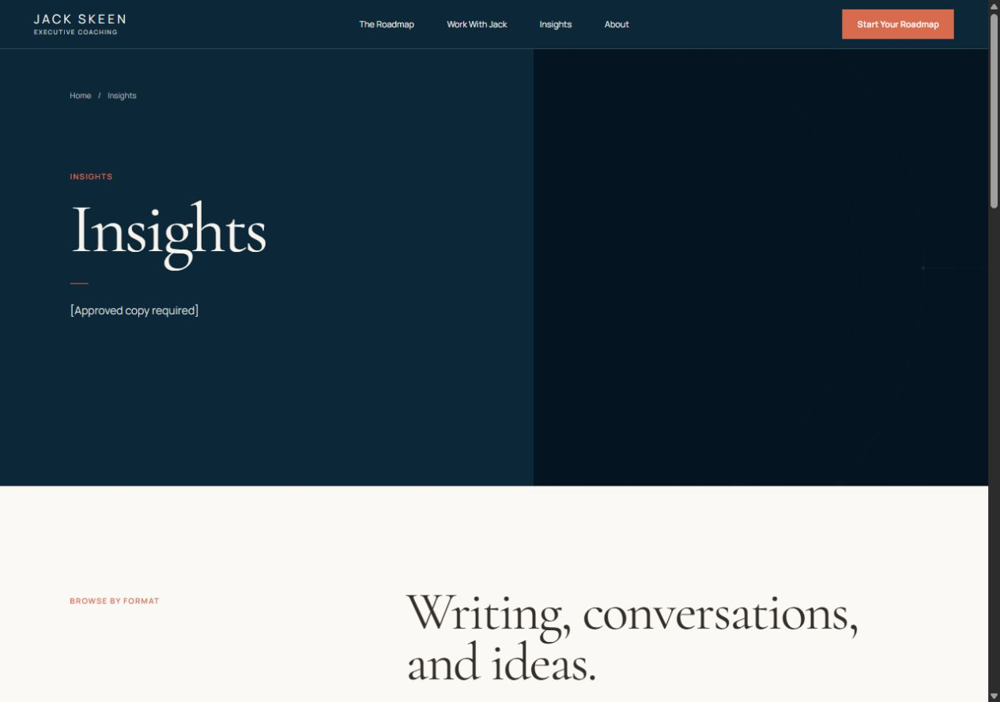
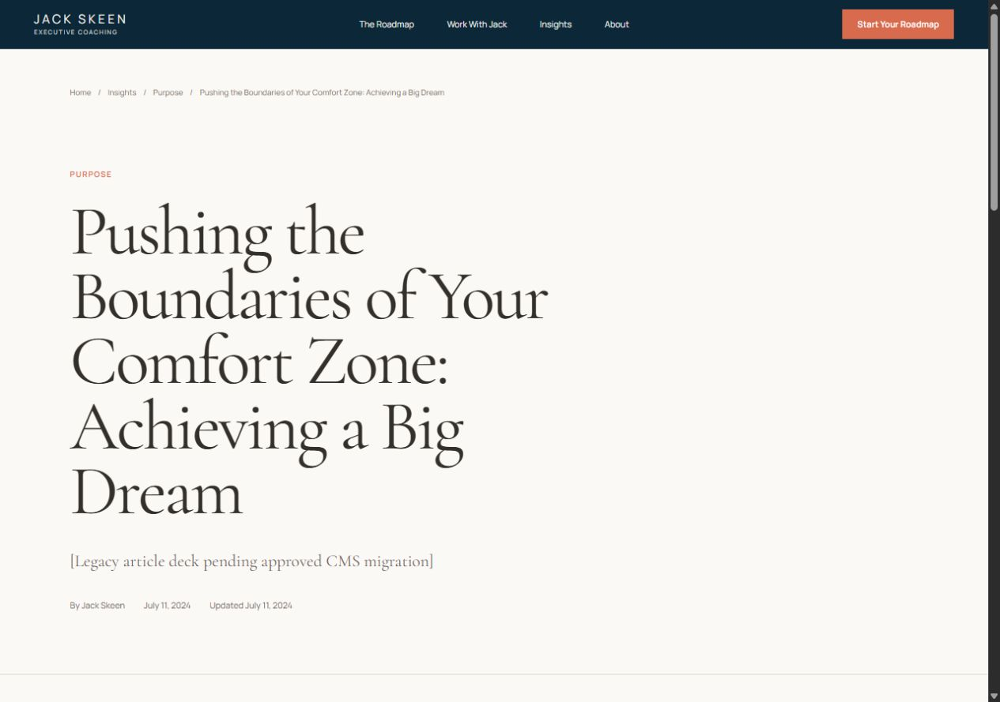
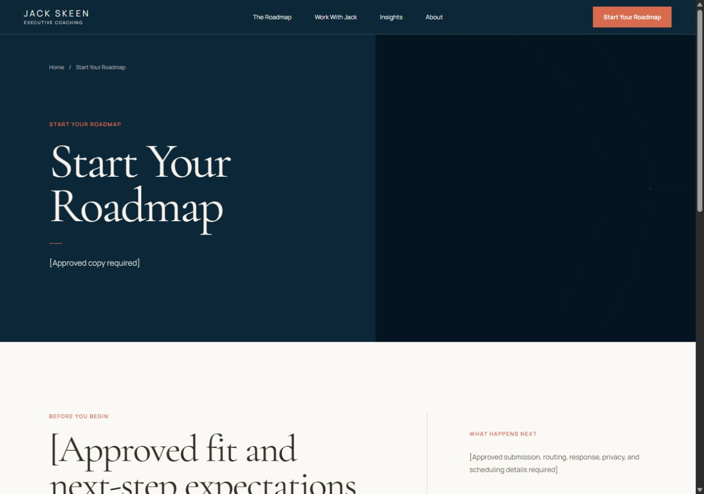
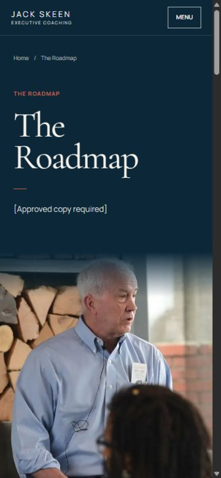
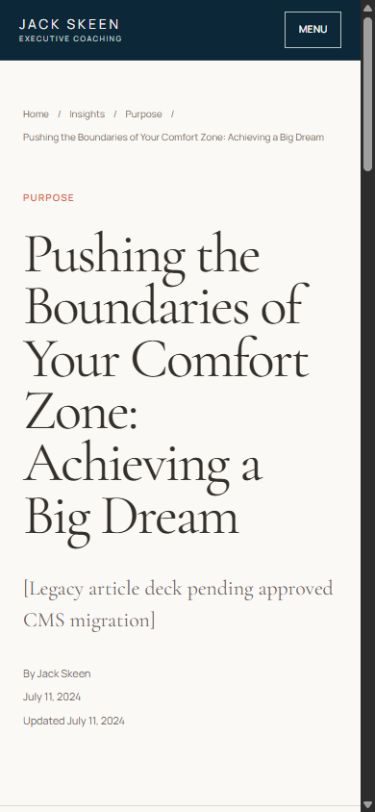
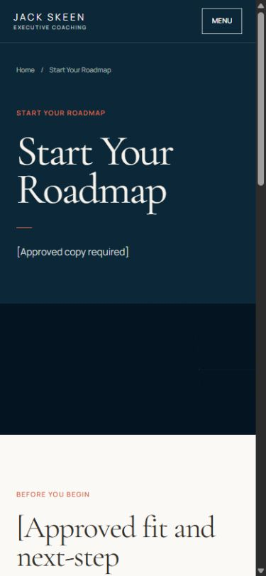

Source continuity
Selected direction and site implementation
 Selected reference: editorial typography, split photography, warm paper, restrained geometry.
Selected reference: editorial typography, split photography, warm paper, restrained geometry.

Roadmap template: the same visual language with a purpose-specific problem, solution, process, evidence, and CTA structure.
Strategic templates
Completed responsive page families
The Roadmap and three support-page templates.
Built · source placeholders remain

Offer selector and four offer-detail templates.
Built · offer facts remain

Biography, authority, origin, ideas, and source-gate structure.
Built · verified biography remains

Format navigation, article library, topic hubs, and media empty states.
Built · media records remain

Preserved metadata, migration body, author, related content, and CTA.
Built · migrated body remains

Expectation, form, disabled integration, and legal dependency states.
Built · submission integration remains
Responsive proof
Mobile hierarchy is preserved.

Roadmap mobile hero.

Long-title article handling.

Conversion route mobile hierarchy.